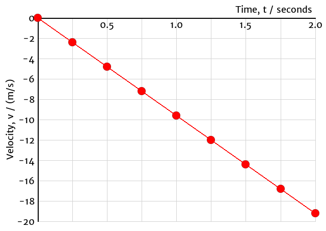

Accelerated Motion
Uniform motion means that an object’s instantaneous velocity is constant.
- A \({\vec{\mathbf d}}\)-\(t\) graph for uniform motion will be a straight line (constant slope).
- A \({\vec{\mathbf v}}\)-\(t\) graph for uniform motion will be a horizontal line.
Accelerated motion means that the object’s instantaneous velocity is not constant.
Motion of a Falling Ball: \(\vec{\mathbf v}\) vs \(t\)

- A \({\vec{\mathbf d}}\)-\(t\) graph for 1D accelerated motion will be a curve (changing slope).
- If the force causing the acceleration is constant, the \({\vec{\mathbf d}}\)-\(t\) graph will be a parabola and the \({\vec{\mathbf v}}\)-\(t\) graph will be a sloped line.
- Otherwise both graphs will be curves. The exact shape of the curves will depend on the force.
| Type of Motion | Shape of Graph | |
|---|---|---|
| \(\vec{\mathbf d}\)-\(t\) | \(\vec{\mathbf v}\)-\(t\) | |
| Uniform (Constant \({\vec{\mathbf v}}\)) | Linear | Horizontal |
| Uniform Accelerated (Constant \({\vec{\mathbf a}}\)) | Parabolic | Linear |
| Non-Uniform Accelerated (Neither Constant) | Curved | Curved |
Acceleration
Acceleration is defined as the rate at which the instantaneous velocity is changing:$${\vec{\mathbf a}} = {\Delta{\vec{\mathbf v}}\over\Delta t} = {{\vec{\mathbf v}}_f - {\vec{\mathbf v}}_i \over\Delta t}$$
- Acceleration is the slope of the \({\vec{\mathbf v}}\)-\(t\) graph.
- The SI unit of acceleration is (m/s)/s, or m/s2.
- An acceleration of +3.0 m/s2 means the velocity is changing by +3.0 m/s every second.
- Near Earth’s surface, gravity produces an acceleration of 9.81 m/s2 [down] when there is no air resistance and no other forces acting on the object.
Displacement
The displacement of an object can be calculated as:$$\Delta{\vec{\mathbf d}} = {\vec{\mathbf v}}_{avg}\Delta t$$
- This is really just the area under the \({\vec{\mathbf v}}\)-\(t\) graph.
- If the acceleration is constant (\({\vec{\mathbf v}}\)-\(t\) graph is a straight line), we can use a simple average between the initial and final velocities.
- If the acceleration is not constant (the \({\vec{\mathbf v}}\)-\(t\) graph is a curved), we need calculus to determine the displacement (area) accurately.
Example 1
Calculate the acceleration of the ball based on the graph.
Identify the variables from the graph:
- \(t_i = \mathrm{0.0\ s}\)
- \(t_f = \mathrm{2.0\ s}\)
- \(\vec{\mathbf v}_i = \mathrm{0.0\ m/s}\)
- \(\vec{\mathbf v}_f = \mathrm{-19.2\ m/s}\)
- \(\vec{\mathbf a} =\ ?\)
Select the relevant relationship (equation) and evaluate:
$$\vec{\mathbf a} = {\Delta \vec{\mathbf v}\over \Delta t} = \mathrm{-19.2\ m/s - 0.0\ m/s \over 2.0\ s - 0.0\ s} = \mathrm{-9.6\ m/s^2}$$
- Is the answer reasonable?
Example 2
A car is travelling at 60.0 km/h. How long will it take to accelerate to 80.0 km/h is the car can accelerate at a rate of 3.00 m/s2?
Identify the variables and convert to standard SI units:
- \(\vec{\mathbf v}_i = \mathrm{+60.0\ km/h = +16.7\ m/s}\)
- \(\vec{\mathbf v}_f = \mathrm{+80.0\ km/h = +22.2\ m/s}\)
- \(\vec{\mathbf a} = \mathrm{+3.00\ m/s^2}\)
- \(\Delta t =\ ?\)
Select the relevant relationship (equation):
$$\vec{\mathbf a} = {\Delta \vec{\mathbf v}\over \Delta t}$$
Rearrange the equation to isolate the unknown:
$$\vec{\mathbf a}\color{red}{\Delta t} = {\Delta \vec{\mathbf v}\over \Delta t} \color{red}{\Delta t}$$
$$\vec{\mathbf a}\Delta t = \Delta \vec{\mathbf v}$$
$${\vec{\mathbf a}\Delta t \over \color{red}{\vec{\mathbf a}}} = {\Delta \vec{\mathbf v} \over \color{red}{\vec{\mathbf a}}}$$
$$\Delta t = {\Delta \vec{\mathbf v} \over \vec{\mathbf a}}$$
Evaluate, including units:
$$\Delta t = \mathrm{+22.2\ m/s - (+16.7\ m/s) \over +3.00\ m/s^2}$$
$$\Delta t = \mathrm{1.85\ s}$$
- Is the answer reasonable?